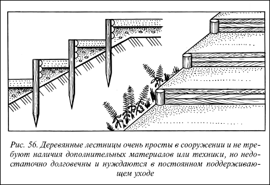
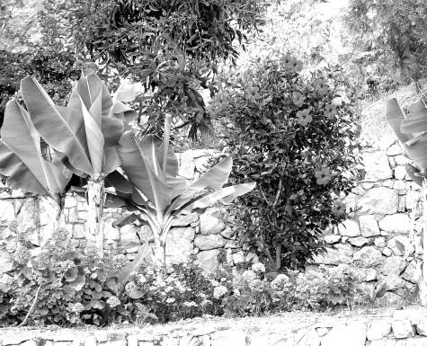
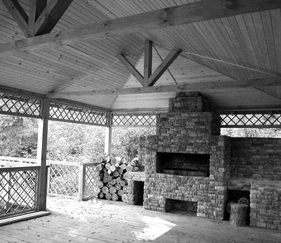
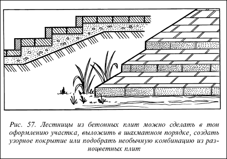
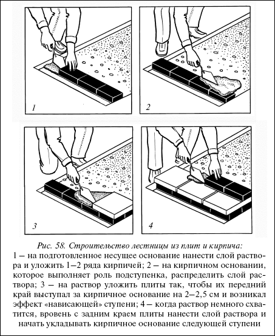
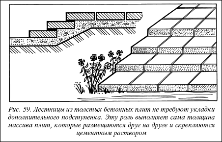
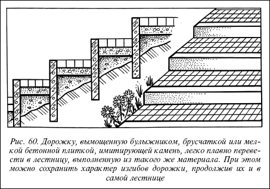

Лестницы.

Лестницы необходимы там, где есть естественный уклон местности и присутствуют разные по уровню участки территории. Лестницы служат для связывания и объединения этих участков, делают возможным переход между ними, соединяют дорожки и площадки, расположенные на разной высоте участка.
Сооружение лестницДля строительства использовать каменные или бетонные плиты, гранитный бой, гальку, щебень, кирпич, бетон, дерево. Вид, прочность и долговечность лестницы зависят от материала и качества исполнения.
Деревянная лестницаЭто наиболее простой в конструктивном решении и исполнении тип лестницы. Они дешевы в изготовлении, но не отличаются долговечностью нуждаются в постоянном поддерживающем уходе.

Рис. 56. Деревянные лестницы очень просты в сооружении и не требуют наличия дополнительных материалов или техники, но недостаточно долговечны и нуждаются в постоянном поддерживающем уходе
Обычно у деревянной лестницы подъем ступеней, то есть их вертикальную часть, делают из досок, распила нетолстого кругляка или жердей за кольями, а проступь, то есть горизонтальную часть ступеней, заполняют гравием. Для этого деревянные колышки (штифты) длиной 50–60 см у левого и правого окончания ступени забивают в землю. За колышки (с выступом на 15 см от длины ступени) забивают деревянные доски или распил кругляка. Поверхность ступеней утрамбовывают, заполняют гравием, уплотняют. Сверху можно засыпать ступени корой.
Лестница из плит, камня, кирпичаДля сооружения таких лестниц необходимо сделать основание в подножии выбранного наклона. Фундамент должен быть достаточно прочным, так как он несет всю нагрузку, приходящуюся на лестницу. Основанием служит слой гальки, щебня, гравия толщиной не менее 810 см. Для большей прочности можно скрепить щебень цементным раствором. Только на плотном тяжелом грунте в некоторых случаях можно обойтись без фундамента.


Лестницы из плит и кирпича достаточно просты в изготовлении. Подсчитывают необходимое число и высоту ступенек, утрамбовывают слой гравия или щебня. Для обеспечения максимальной устойчивости под первую ступеньку помещают слой бетона толщиной 10 см и фиксируют в нем подступенок второй. Поверх затвердевшего бетонного основания
выкладывают на раствор 1–2 ряда кирпича. Позади подступенка засыпают и утрамбовывают твердый наполнитель – бутовый камень до уровня, соответствующего высоте боковой стенки первой ступеньки. В качестве проступи выкладывают плитки. На кирпичную поверхность подступенка наносят раствор и кладут плитку так, чтобы ее край выступал вперед на 2,5–5 см. Нависающая проступь придает ступеньке более изящный вид. Следующий подступенок сооружается на заднем крае первой проступи, после чего цикл операций повторяется.
Лестница из монолитного бетонаТакая лестница отличается высокой прочностью и неприхотливостью в плане дальнейшего ухода, она надежна и долговечна. При сооружении бетонной лестницы сначала готовят ложе, выбирая грунт на глубину 15 см, то есть дно ложа должно размещаться на 15 см ниже уровня основания склона.

Рис. 57. Лестницы из бетонных плит можно сделать в тон оформлению участка, выложить в шахматном порядке, создать узорное покрытие или подобрать необычную комбинацию из разноцветных плит

Рис. 58. Строительство лестницы из плит и кирпича:
1 – на подготовленное несущее основание нанести слой раствора и уложить 1–2 ряда кирпичей; 2 – на кирпичном основании, которое выполняет роль подступенка, распределить слой раствора; 3 – на раствор уложить плиты так, чтобы их передний край выступал за кирпичное основание на 2–2,5 см и возникал эффект «нависающей» ступени; 4 – когда раствор немного схватится, вровень с задним краем плиты нанести слой раствора и начать укладывать кирпичное основание следующей ступени
Дно ложа тщательно уплотняют, засыпают слоем щебня, а затем изготовляют опалубку для поддержания каждой боковой стороны ступеньки. К верхнему краю передней стенки опалубки изнутри прикрепляют небольшую кромку, ограничивающую уровень заливки бетона. Это необходимо для придания уклона поверхности ступеньки и предотвращению крошения ее края.

Рис. 59. Лестницы из толстых бетонных плит не требуют укладки дополнительного подступенка. Эту роль выполняет сама толщина массива плит, которые размещаются друг на друге и скрепляются цементным раствором

Рис. 60. Дорожку, вымощенную булыжником, брусчаткой или мелкой бетонной плиткой, имитирующей камень, легко плавно перевести в лестницу, выполненную из такого же материала. При этом можно сохранить характер изгибов дорожки, продолжив их и в самой лестнице
Прочность конструкции повышают прокладкой арматуры в бетоне под каждой ступенькой. Минимальная толщина слоя бетона около 10 см. Ступеньки утрамбовывают, выравнивают, обрабатывают мастерком и отделывают, как и дорожки. Следующую ступеньку сооружают выше предыдущей и т. д., постепенно продвигаясь к вершине склона. При желании бетонную поверхность можно облицевать разноцветной плиткой, галькой, кусочками цветного стекла.